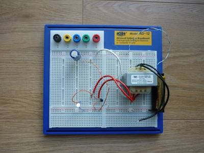
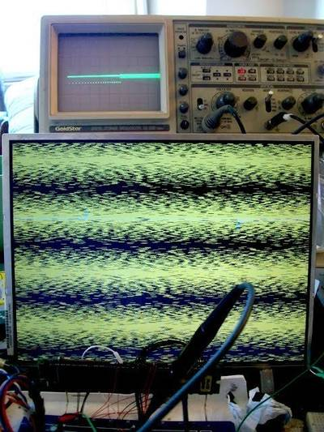

2016-03-17 - Nº 46
Editorial
Aqui está a Newsletter Nº 46 no seu formato habitual. Agora às quintas-feiras. Se gostar da Newsletter partilhe-a!
Todas as Newsletters encontram-se indexadas no link.
Esta Newsletter tem os seguintes tópicos:
Esta semana matemáticos descobriram uma propriedade simples, mas até agora despercebida, dos números primos - os números primos repelem outros possíveis números primos que terminam no mesmo digito e têm propensão para serem seguidos por outros números primos que terminem noutros dígitos finais possíveis. A ARM e a TSMC anunciaram uma parceria para colaboração do desenvolvimento do processo FinFET de 7nm. Por fim a Honda selecionou o programa Watson IOT da IBM para que possa tomar decisões em tempo real baseados na informação dos cerca de 160 sensores dos seus carros de formula 1.
Na Newsletter desta semana apresentamos diversos projetos de maker e na rubrica "Documentação" apresentamos quatro livros (eBooks) que podem ser descarregados livremente e que esta semana são sobre Conceitos de Computação com Scratch, Administração de Sistemas Redhat Enterprise Linux 7, Introdução à programação e um livro sobre o Microcontrolador STM32.
 João Alves ([email protected])
João Alves ([email protected])
O conteúdo da Newsletter encontra-se sob a licença  Creative Commons Attribution-NonCommercial-ShareAlike 4.0 International License.
Creative Commons Attribution-NonCommercial-ShareAlike 4.0 International License.
Novidades da Semana ^
Mathematicians Discover Prime Conspiracy
"Two mathematicians have uncovered a simple, previously unnoticed property of prime numbers — those numbers that are divisible only by 1 and themselves. Prime numbers, it seems, have decided preferences about the final digits of the primes that immediately follow them. Among the first billion prime numbers, for instance, a prime ending in 9 is almost 65 percent more likely to be followed by a prime ending in 1 than another prime ending in 9. In a paper posted online today, Kannan Soundararajan and Robert Lemke Oliver of Stanford University present both numerical and theoretical evidence that prime numbers repel other would-be primes that end in the same digit, and have varied predilections for being followed by primes ending in the other possible final digits."
-
"ARM and TSMC announced a multi-year agreement to collaborate on a 7nm FinFET process technology which includes a design solution for future low-power, high-performance compute SoCs. The new agreement expands the companies’ long-standing partnership and advances leading-edge process technologies beyond mobile and into next-generation networks and data centers. Additionally, the agreement extends previous collaborations on 16nm and 10nm FinFET that have featured ARM® Artisan® foundation Physical IP."
Honda Selects IBM Watson IoT Technology Enabling Real-Time Racing Decisions for Formula One Drivers
"IBM today announced that Honda R&D is monitoring and analyzing data from more than 160 sensors in Formula One (F1) cars using IBM Watson Internet of Things (IoT) technology. Now, drivers and crews can apply data and analytics in real-time to help streamline performance and improve fuel efficiency, enabling drivers to make real-time racing decisions based on this data, such as speed adjustments and pit stops."
Ciência e Tecnologia ^
Nanoelectronics Engineers Develop Transistor that Overcomes Fundamental Power Limitations
"A new atomically-flat transistor developed by UC Santa Barbara engineers overcomes one of the fundamental limitations of conventional transistors and reduces power dissipation by over 90 percent. One of the greatest challenges in the evolution of electronics has been to reduce power consumption during transistor switching operation. In a study recently reported in Nature, engineers at UC Santa Barbara, in collaboration with Rice University, have demonstrated a new transistor that switches at only 0.1 volts and reduces power dissipation by over 90% compared to state-of-the-art silicon transistors (MOSFETs)."
The world’s tiniest temperature sensor is powered by radio waves
"Researchers at TU/e have developed a very tiny wireless temperature sensor that is powered in a very special way: from the radio waves that are part of the sensor’s wireless network. This means that the sensor needs not even a single wire, nor a battery that would have to be replaced. The arrival of such sensors is an important development on route towards smart buildings, for instance. But the applications are many and various."
Nanobombs Might Deliver Agents That Alter Gene Activity in Cancer Stem Cells
"Researchers at The Ohio State University Comprehensive Cancer Center – Arthur G. James Cancer Hospital and Richard J. Solove Research Institute (OSUCCC – James) have developed nanoparticles that swell and burst when exposed to near-infrared laser light. Such “nanobombs” might overcome a biological barrier that has blocked development of agents that work by altering the activity – the expression – of genes in cancer cells. The agents might kill cancer cells outright or stall their growth. The kinds of agents that change gene expression are generally forms of RNA (ribonucleic acid), and they are notoriously difficult to use as drugs. First, they are readily degraded when free in the bloodstream. In this study, packaging them in nanoparticles that target tumor cells solved that problem."
Camera system sees round corners
"Edinburgh researchers have helped develop a camera system that can see around walls. The technology can locate hidden objects with the precision of a few centimetres, and track their movements. The system works by sending light from a laser towards a hidden object or person, which bounces off the object to send a light signal back again."
Stanford-led skyscraper-style chip design boosts electronic performance by factor of a thousand
"In modern computer systems, processor and memory chips are laid out like single-story structures in a suburb. But suburban layouts waste time and energy. A new skyscraper-like design, based on materials more advanced than silicon, provides the next computing platform. For decades, engineers have designed computer systems with processors and memory chips laid out like single-story structures in a suburb. Wires connect these chips like streets, carrying digital traffic between the processors that compute data and the memory chips that store it."
Team Prolongs 'Young Adult' State in Worms
"A new study led by scientists at The Scripps Research Institute (TSRI) shows that an antidepressant drug, called mianserin, can extend the “young adult” state in roundworms, a common model of aging. While it is too soon to know whether the treatment has any effect in humans, the study reveals a new metric to track aging—one that can reveal troubling age-associated changes relatively early in life."
Documentação ^
A documentação é parte essencial do processo de aprendizagem e a Internet além de artigos interessantes de explorar também tem alguma documentação em formato PDF interessante de ler. Todos os links aqui apresentados são para conteúdo disponibilizado livremente pelo editor do livro.
Livros
Computer Science Concepts in Scratch (Scratch 1.4)
"This book will familiarize you with the Scratch visual programming environment, focusing on using Scratch to learn computer science. The book is structured as a collection of tasks. Each chapter teaches a new concept, but the concept is introduced in order to solve a specific task such as animating dancing images or building a game. Each chapter starts with a simple task, but as soon as we solve one task, we add additional tasks to extend the existing task. The sequence of tasks will require a new construct of Scratch or the use of constructs you know in new ways."
Red Hat Enterprise Linux 7 - System Administrator's Guide
"The System Administrator's Guide documents relevant information regarding the deployment, configuration, and administration of Red Hat Enterprise Linux 7. It is oriented towards system administrators with a basic understanding of the system. To expand your expertise, you might also be interested in the Red Hat System Administration I (RH124), Red Hat System Administration II (RH134), Red Hat System Administration III (RH254), or RHCSA Rapid Track (RH199) training courses."
Programming from the Ground Up
"This is an introductory book to programming and computer science using assembly language. It assumes the reader has never programmed before, and introduces the concepts of variables, functions, and flow control. The reason for using assembly language is to get the reader thinking in terms of how the computer actually works underneath. Knowing how the computer works from a "bare-metal" standpoint is often the difference between top-level programmers and programmers who can never quite master their art."
Discovering the STM32 Microcontroller
"This book is intended as a hands-on manual for learning how to design systems using the STM32 F1 family of micro-controllers. It was written to support a junior-level computer science course at Indiana University. The focus of this book is on developing code to utilize the various peripherals available in STM32 F1 micro-controllers and in particular the STM32VL Discovery board. Because there are other fine sources of information on the Cortex-M3, which is the core processor for the STM32 F1 micro-controllers, we do not examine this core in detail; an excellent reference is “The Definitive Guide to the ARM CORTEX-M3.”"
Modelos 3D ^
Com a disponibilidade de ferramentas que permitem dar azo a nossa imaginação na criação de peças 3D e espaços como o thingiverse para as publicar, esta rubrica apresenta alguns modelos selecionados que poderão ser úteis.
LED Lamp
Print at your own risk. Make sure to check the scale before printing. The shade of the lamp is sized to fit 5mm leds.
Battery Pack For the base of the battery pack I took a pen and cut off a section. For the caps that go into the battery pack enclosure (pen shaft) I used screw caps(commonly provided with furniture kits to hide the screws) and drilled a hole in the center. I used two of these, one for the top and one for the bottom of the battery pack enclosure.
I removed the springs from the pen and cut it half. Refer to the image you'll see I have one of the springs on the top of the battery pack.
Will explain more later.
Modular Box
Modular Box
Test Lead Holder -basic and varied width
Basic Test lead holder for cables up to 6.35mm (RG-6 with connector). You can fit your meter, generator and power leads on this hanger. Holes for wall mount or if not a lot of weight some two sided tape may work.
Varied Width Test Lead Holder for scope probes, meter and generator leads along with skinny test clips.
There are supports about 2/3 the finger length to handle higher weights for lots of cables. Maybe over built. The varied width hanger is a lighter build.
I have an configurable SCAD file up now to add or take slots away plus other configurable pieces, enjoy.
Let me know what you think. David
Projetos Maker ^
Diversos Projetos interessantes.
Smart-home Remote Edition (Arduino)
"This project represents the simple smart home solution you can make with the Arduino. This version has two units remotely connected via bluetooth. Master unit use Arduino Mega 2560 and for a slave unit you can use Uno, or some other clone with one TTL(Serial) interface."
Musi - Hear the melody of space.
"What are the sounds of having everything in mess and how it differs from order? How to compare different surroundings in abstract way? Musi is an experimental audio device which brings the physical arrangement of objects into the musical world by answering these questions."
An Improved Joule Thief--An Unruly Beast Tamed?

"Few simple electronic circuits have given as much fun to so many as the Joule Thief and vast amounts of internet bandwidth have been expended on its construction. It is with some trepidation that the author is proposing to add to this!"
-
"A very simple robot commanded by RF remote control"
AUTOMATIC SOLAR POWERED NIGHT LIGHT
"Today I am going to make life hack "instructable" can save both money and time. This is the tutorial of how to make an automatic solar powered night light. This device can charge at daytime and work automatically at night"
Shirt Circuit: DIY Wearable Breadboard Circuits
"Shirt Circuit is soft wearable breadboard with modular DIY circuit components that can be snapped onto the shirt by the wearer. The motivation behind shirt circuit is to challenge the 'black box' paradigm in which STEM education is often delivered. This is done through making and playing"
Digital oscilloscope with LCD screen
"I tried to make simple and cheap oscilloscope using common parts from today's component retailers. When creating, I tried to reduce the number of parts, while maintaining the minimum necessary for the functionality of an oscilloscope - for different settings and troubleshooting of power converters , household appliances control circuits , for the study of different devices, where not required accurate measurements and high frequencies , and you just need to look at the waveform , up to 200 ... 300kHz."
Lightweight AVR assembler functions
"Over the past few years, I've written a few posts about small problems in the way avr-gcc generates code. These problems are typically poor optimization, and since they don't cause problems in program functionality, they tend not to be fixed. I believe the biggest opportunity in optimization is in inter-procedure register analysis, which is being worked on in GCC 5, but is unlikely to support 8-bit AVR MCUs."
-
"Simple Pi Robot aims to put robot control in simple form, the robot design is similar to versatile GOPIGO robot built by dexter industries."
AbHhGD - The Arduino based Hand-held Gaming Device
"The device sports a couple of games and a menu system consisting of a letter indicating the current selection. The menu options may be selected by turning the dial and the corresponding game is started pressing either one of the push buttons. When the game is finished playing it returns to the menu system allowing the user to immerse herself in yet another one of the many exciting gaming experiences the AbHhGD has to offer!"
-
"Posture sensors/monitors have been a recurring theme on this blog. They are supposed to remind you of your posture and prevent you from slouching, which can be a cause for back pain and headaches.While my previous sensors were either fixed to a chair or desk, this time I wanted to create a wearable version, that would allow for free movement. As always, one of the main goals was to make this project cheap and easy to reproduce. "
Web-Enabled Home Thermostat (and Home Automation Hub)
"This Instructable explains about how I built WiFi enabled thermostats for my home. The thermostats are programmable with 6 different time periods during the day, although increasing that to any arbitrary number would be fairly trivial. They can be programmed (in the sense of setting times and temperatures) as well as controlled over the internet, and they have a touchscreen LCD display for local control as well. And, I spent (and continue to spend) a fair amount of time trying to get them to look decent; after all, this is something that hangs on my wall, and I and my family will be seeing it every day."
4A Bipolar Stepper Motor Driver Based on LV8727E
"The Project is based on LV8727E IC from ON Semiconductor. The LV8727 is a PWM current-controlled micro step bipolar stepping motor driver. This driver can provide eight ways of micro step resolution of 1/2, 1/8, 1/16, 1/32, 1/64, 1/128, 1/10, 1/20, and can drive simply by the step input. This Bipolar Driver works with supply input 9V to 36V (Replace L317 with L317HVT for supply input up to 45V DC). Load current up to 4Amps."
Arduino Theremin Door-close Reminder
"Sometimes, we need to add some seasoning to our life, so that you ll feel better and create more fun to prompt life become amazing. My colleagues and me always forget to close the door after our meeting, and there are too many valuables in the meet room. I think keep door closed is a good manner. So how to change this status? I have a idea now, both of us like listen to music, especially light music and classical music. The voice of theremin sounds deep but melodious. It always make me feel comfortable. Although we are engineer, we also enjoy life with massaging our ears. How about to make theremin by Arduino? It seems well if we could play the music with the process of closing the door. When we start to work, some of problems encountered, such as how to make the sound feel more comfortable and set the effective range and so on, these have been solved by modifying the program. Arduino is a easy but powerful tool, we complete finish this project as it cost just several hours."
Crazy Caterpillar - Arduino Robot w/Grove Joint & Infrared Sensor
"My friend Steven, who is a Secondary School Teacher, asked me to design a lovely bionic animal as a training aid which could help make their study more interesting. So I made the Crazy Caterpillar for her. The small worm has two heads. They can be controlled by two different IR remote controllers. They can crawl step by step. Therefore, every two students can make and play with the caterpillar together. In one class, many caterpillars can be used. After class, they even can play an interesting game named A MAZING CATERPILLAR RACE with their own caterpillars. The fastest caterpillar will win and the team will get the reward."
A tiny hardware speech synthesizer/tts
"Back in the 1980s, the now-defunct Digital Equipment Corporation (DEC) sold a hardware speech synthesizer based on Dennis Klatts research at MIT. These DECTalk boxes were compact and robust, and despite not having the greatest speech quality gave valuable speech, telephone and reading accessibility to many people. Stephen Hawkings distinctive voice is from a pre-DEC version of the MIT hardware. DEC is long gone, and the licensing of DECTalk has wandered off into mostly software. Much to the annoyance of those in earshot, Ive always enjoyed dabbling in speech synthesis. DECTalk hardware remains expensive, partly because of demand from electronic music producers (its vocoder-like burr is on countless tracks), but also because there are still many people who rely on it for daily life. I couldnt justify buying a real DECTalk, but I found this: the Parallax Emic 2 Text-to-Speech Module. For about $80, this stamp-sized board brings a hardware DECTalk implementation to embedded projects. The Emic 2 is really marketed to microcontroller hobbyists: Make Your Arduino Speak! sorta thing. But I wanted to make a DECTalk-ish hardware box, with serial input, a speaker, and switchable headphone/line jack. [t?k b?ks] (a fair approximation of how I pronounce Talk Box) is the result."
RS485 Serial Communication between Arduino Mega and Arduino Nano with Visuino
"Sometimes we need to connect Arduino boards located far away from each other. The RS485 is a very convenient way to connect the boards with just 2 wires, and can work to a distance of 1200m (4000 ft). It also allows multiple boards to be connected easily to the same 2 wires. The downside is that the channel is shared between multiple devices, and only one of them can transmit at a time."
How to convert a PlayStation controller to bluetooth.
"Convert a Playstation controller into a wireless Bluetooth classic gamepad. "
-
"I needed a small storage container for things like router and drill bits, glue and other small items I use in my workshop. I liked the design of a pivoting box, but the ones that could be bought were way to large, so I decided to make one myself. Fortunately I could use the lasercutter at my local FabLab in the evening hours. This pivoting box has 4 small compartments and one large, and two of the small compartments can be divided into 6 smaller compartments using some dividing walls. The pivoting box has a handle so it can easily be transported and top compartments have lids that uses 100% laser cut hinges, that are solid and don't rattle."
-
"Here is an attempt to give some information on the wireless probes Im using with my Raspberry pi logging station (for the full story). The wireless link is performed by nRF24l01+ modules."
-
"A while ago, I stumbled over a component called DFPlayer. It's a tiny component that allows to play mp3 from an micro SD card (for less that 10!)."
Arduino Programmable Button Panel As Keyboard
"This is a pretty simple and fun project with Arduino which is an ideal option for your first interaction with Arduino. You will create a panel with different buttons, each one will do an action in your computer (Mac or Pc) by emulating keyboard shortcuts or commands. In my case, I use it with coding software to have an easy and fun shortcut to copy, paste, duplicate line, save, capture screen and open a couple of apps."
How to Make a Fullyrotational Servo
"In this Instructables I will show you how to make a fullyrotational servo from a standard 9g servo."
Desktop Motor Test Stand (Dynamometer)
"In this instructable, we will show you how to construct a desktop dynamometer which looks like the one above."
Raspberry Pi nRF24L01+ Data Collector using Google Forms

"A headless Raspberry Pi with an nRF24L01+ 2.4GHz radio transceiver, connected to the internet. Receiving wireless data packets from remote sensors and presenting the data to a Google form for subsequent viewing and presentation. The data is posted to the Google Form using a Python script, there is also an nCurses dashboard for the Raspberry Pi data collector that may be accessed through a VNC server, or SSH."
-
"Im here with the most "you're-doing-it-wrong" project today. But it works and pleases my ears. And who knows, you might learn something while you do this. The list of things is small. You need one speaker, one arduino and two cables. Thats all folks. You'll be making music in no time and have a great evening. The speaker could be pretty much any speaker but I suggest you'll take an old one you don't care about. I'm using chinese crap speakers for < $1."
Make Your Own Dimmable LED Workshop Lighting! (Extremely High Efficiency)
"In this Instructable, I'll show you how to make your own extremely efficient LED lighting for your workshop! We, Makers, Never have enough lighting on our worktable, So we need to buy lamps. But as makers, We don't buy things (And get ripped off...), We MAKE them! That's why I've decided to make my own LED lighting!"
Wifi for Weather station WS2357 Lacrosse
"Use of the module ESP8266 with a meteo station LACROSSE WS2357. Here is a realization a meteo station ws2357 in WiFi with the module ESP8266 "
How to measure mass of the Earth using arduino.
"One fine day, I was weighing my self on a weighing scale. Suddenly a thought came to my mind, 'How much would be the mass of Earth?'. Leave that apart 'How can we even measure it?'. There is no such weighing scale on which, Earth can be placed. There has to be some indirect way to measure mass of the Earth. Here I present implementation of one such indirect method to measure mass of the Earth."
-
"In this project I will show you how to transform a TEA5767 and an Arduino Pro Mini into a functional and decent looking FM Radio through the help of a couple complementary parts."
Raspberry PI Rotary Time Lapse Rig.
"So this instructable is about a time lapse rig. it started as a simple idea and then grew to what you see. Even if you don't want to build a time lapse rig some of the parts of this build may be of help to user's of the wonderful Raspberry PI."
Bob The Robot - Arduino Robot Framework
"I've been looking for a nice robot framework and I've tried out many of these ... eventually (like most programmers do ) I've decided that I should develop my own robot framework!"
Arduino based cellular automata
"You have probably heard of Game of Life. It is popular cellular automata simulation game where you create simple structures in infinite plain and watch the life evolve. All this is achieved by implementing several basic rules. By implementing different rules, you can simulate biological processes, model structure behavior and program robot swarms."
-
"This instructable is all about making your own all in one Shooting Game within your budget. The project is now of alpha version.The animations and game, you are seeing in videos are preliminary. You can do many thing that you can imagine."
sdramThing4.5 "Logic Analyzer"

"An AVR, 128MB SDRAM DIMM, old laptop LCD, and a handful of TTL chips -- 30+MS/s 32-channel logic-analyzer interface for an analog 'scope. This is a Sample/Repeat "Logic Analyzer" with up to 32 channels at 30+MS/s, each. After sampling, the data is repeated e.g. to an oscilloscope for viewing. Two channels of the sampled data are displayed as red and green in "rasta"(raster) fashion on an LCD display. Cursors (in blue) are used to select a window for repeating, allowing for bright 'scope traces. "
-
"This is a project I made in 2015 and now publishing. The core of the Project is a hardware made out of two CD drive stepper motors an mechanics, two L298 motor drivers and an arduino Mega."
ESP8266 Home Automation Part 1
"Everybody heard about Home automation. It's an interesting theme and many thought about making the home a bit smarter. In this instructable i show you my way to make your home smarter and some advice to realise it. I work with the popular ESP8266 Node-MCU v0.9 (ESP-12 Modul). It's not essential to work with this modul but ist has many advantages. On the one hand it's easy to program with the Aruino IDE and his micro usb port so you don't need a FTDI Programmer on the other hand it has many ports for sensors."
PULPino An open-source microcontroller system based on RISC-V
"PULPino is an open-source microcontroller system, based on a small 32-bit RISC-V core developed at ETH Zurich. The core has an IPC close to 1, full support for the base integer instruction set (RV32I), compressed instructions (RV32C) and partial support for the multiplication instruction set extension (RV32M). It implements several ISA extensions such as: hardware loops, post-incrementing load and store instructions, ALU and MAC operations, which increase the efficiency of the core in low-power signal processing applications."
-
"This is my first Instructable and my first arduino project, I hope you will find it useful as well. After looking through the projects on Instructables I could only find either a bluetooth door lock or a rfid door lock, not both so I decided to create one myself. Though the build is not totally complete I have tested it out properly and it does work without any problems. I would first like to make clear that the 'Bluetooth app and the arduino code for reading bluetooth, and also the arduino code for reading the rfid' WAS NOT created by me. They have been sourced from other projects in Instructables. I would like to thank 'Taifur' for the Bluetooth app and code to go with it and apologise to the person who created the code for reading the RFID, as I have forgotten who it was."
Raspberry Pi Nin10do 'Lite' Game-Console
"It is a Raspberry Pi2 based gaming station on which you can play ALL your favourite games from Mario to GTA and from Monkey Island to Load Runner... The console look great in the living room and is really easy to operate because of the smart on/off and restart system which is always a pain in the *ss with every Pi project. After trying many different boards the LowPowerLab ATX-Raspi board proves to be te best one can get!"
That's all Folks!